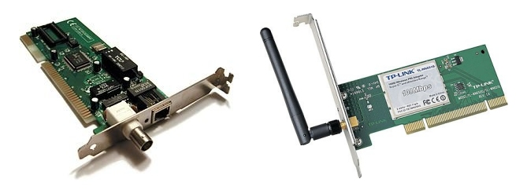
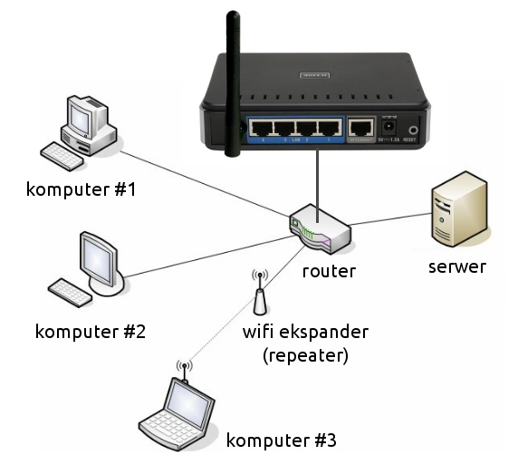
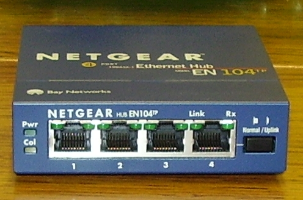
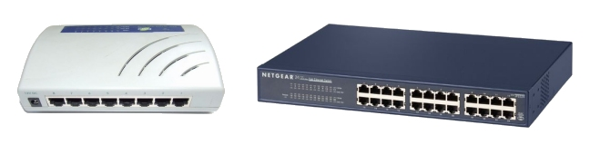
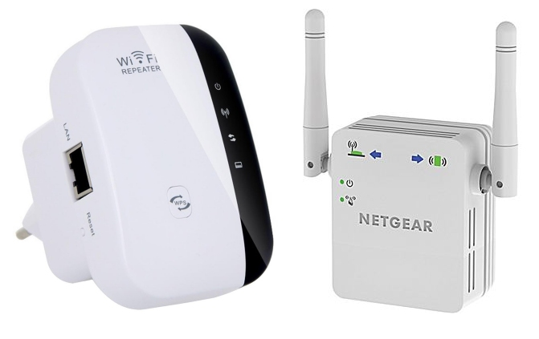
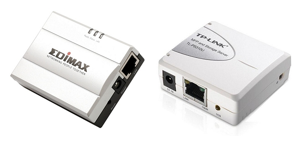
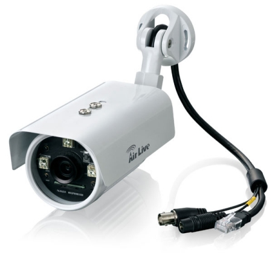

Urządzenia sieciowe to wszystkie urządzenia, które łączą urządzenia końcowe. Umożliwiają w ten sposób komunikację między nimi. Przykładem są: routery, przełączniki, wtórniki, koncentratory i mosty.
Karta sieciowa - Każdy komputer, który ma pracować w sieci, musi mieć zainstalowany adapter umożliwiający fizyczne przyłączenie okablowania sieciowego lub odbiór danych radiowych. Najczęściej przyjmuje on postać karty rozszerzeń montowanej w gnieździe magistrali PCI, PCI-Express lub też zewnętrznego adaptera USB. Każda karta sieciowa posiada unikatowy adres sprzętowy MAC wykorzystywany do identyfikowania komputera w sieci. Adres MAC składa się z 48 bitów i zapisywany jest szesnastkowo. Pierwsze 24 bity oznaczają producenta, pozostałe 24 są unikatowe dla danego egzemplarza karty.

Router to urządzenie, które służy do łączenia sieci komputerowych, na przykład sieci Internet z domową siecią lokalną. Za pomocą wbudowanych mechanizmów (np. NAT) ruter kieruje ruchem pakietów w sieci - wyznacza dla nich odpowiednią trasę. To właśnie od procesu trasowania (ang. routing) wzięła się nazwa urządzenia.

Koncentrator to dziś już nie stosowane urządzenie sieciowe służące do realizacji połączeń między komputerami w sieciach Ethernet opartych na topologii gwiazdy. Pośrednicząc w połączeniu, rozsyła zapytania do wszystkich komputerów uruchomionych w sieci. Dane trafiają do każdego aktywnego węzła, jednak odpowiada tylko ta maszyna, dla której przeznaczone są dane pakiety, pozostałe ignorują cudze pakiety.

Przełącznik to urządzenie centralne służące do realizacji połączeń między komputerami w sieciach Ethernet opartych na topologii gwiazdy. Przełącznik przechowuje w wewnętrznej pamięci numery MAC interfejsów sieciowych, które są skojarzone z portami RJ-45 do których podłączone są komputery. Dzięki sprawdzeniu adresu każdej ramki danych switch przesyła pakiety tylko do właściwego komputera.

Punkt dostępowy to urządzenie zapewniające bezprzewodowy dostęp do zasobów sieci za pomocą WiFi.
Most działa w sposób odwrotny do punktu dostępowego - dzięki niemu sygnał sieci bezprzewodowej możemy zamienić na połączenie kablowe (bo jest potrzebne np. do telewizora z DLNA czy konsoli).
Repeater Wi-Fi to wzmacniacz sygnału Wi-Fi, który jest tłumiony przez ściany działowe i stropy budynku. Ekspander to specjalny punkt dostępowy zamontowany w miejscu, gdzie macierzysta sieć Wi-Fi jeszcze jest dostępna. Stworzona za pomocą ekspandera sieć jest bliźniacza do już istniejącej, czyli obowiązują w niej te same nazwy, ustawienia i zabezpieczenia.

Serwer wydruku to po prostu serwer, który udostępnia usługę drukowania. Pod tym pojęciem rozumiemy oczywiście samo drukowanie, ale nie tylko - serwer potrafi kolejkować przychodzące do wydruku pliki, formatować odpowiednio ich wygląd, jak również prowadzi statystyki i raporty na temat przetwarzanych plików. Serwer wydruku może samodzielnym urządzeniem, pośrednikiem pomiędzy drukarką a komputerami klienckimi.

Kamera IP to urządzenie sieciowe najczęściej wykorzystywane w systemach monitoringu, łączące funkcje kamery i komputera. Urządzenie posiada przypisany adres IP i jest podłączone do sieci. Dzięki temu może pełnić rolę serwera lub klienta FTP, może też wysyłać maile, zarządzać alarmami, wysyłać logi na stronę www etc. Kamera IP nie potrzebuje komputera do działania, tak jak wymaga tego zwykła kamera internetowa.
